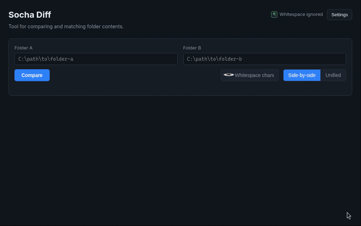
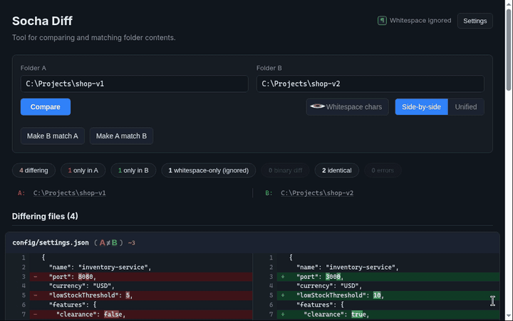
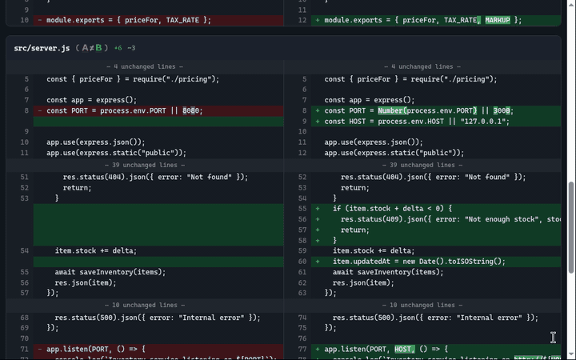
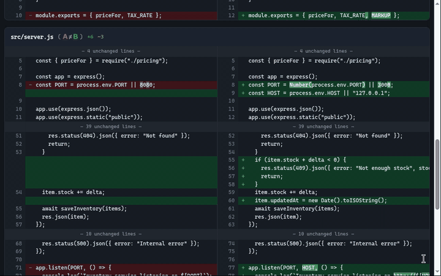

User guide
Every control in Socha Diff, explained
What each button, box, badge and shortcut does, with short real recordings. The demos compare two copies of a small project, C:\Projects\shop-v1 and C:\Projects\shop-v2.
Quick start
- 1Enter two folders. Type or paste a path into Folder A and Folder B (quotes from Explorer's Copy as path are fine).
- 2Click Compare. Socha Diff scans both folders, including subfolders, and lists every file that differs.
- 3Read and act. Filter with the summary chips, open either copy of a file with its A / B link, copy text from one side, or make one folder match the other.
Folder boxes and Compare

- Folder A Folder B
- The two folders to compare. Surrounding spaces and one pair of quotes are removed, so
"C:\Work\site"pasted from Explorer works. The last folders you compared successfully are filled in when the app starts. - Folder check
- When you leave a box, Socha Diff checks the path. A folder gets a subtle green border; otherwise the box turns red with Folder not found, Not a folder, Access denied or Folder not accessible above it. Typing clears the check. It is advice only and never blocks Compare.
- Compare
- Compares the two folders with the current settings. A Comparing… spinner shows at the top while it runs. With an empty box you get Missing folder paths; a folder that does not exist gives Compare failed with the reason.
- ✦ pending star
- A small amber star on Compare's corner means the settings changed since the last Compare, so the results on screen use the old settings. Hover it for Settings changed. Run Compare again to apply them. It disappears after a Compare, or when you change the settings back.
How Folder A and Folder B are matched
- Both folders are scanned including all subfolders. Symbolic links are skipped, and so are excluded folders.
- A file is paired with the file at the same relative path on the other side:
src/app.jsin A withsrc/app.jsin B. Paths are shown with/. - Letter case: Windows folders ignore letter case by default, so
Readme.mdin A andREADME.mdin B are paired as the same file, and the row also shows B's real name: Readme.md B: README.md. - A folder can be case-sensitive if case sensitivity is turned on for it (for example a WSL or developer folder) or if it is on a case-sensitive network share. When both folders are case-sensitive, names must match exactly. Socha Diff detects this for each folder when you compare.
- A case-sensitive folder can hold two names that differ only by case, such as
notes.txtandNotes.txt. When letter case is ignored they cannot be told apart, so they are listed under Errors and Make A/B match never touches them. - Files without a partner go to Only in A or Only in B.
- Paired text files are compared as UTF-8. With Ignore whitespace on (the default), files whose only differences are spaces, tabs, blank lines or CRLF/LF line endings go to whitespace-only (ignored).
- Binary files (a zero byte in the first 8,000 bytes) and files over 5 MB are compared byte for byte, with no line diff. Different ones are listed under Binary / non-text files that differ, as are text files with too many changes to show a line diff.
- Files or folders that cannot be read are listed under Errors with the reason.
Summary chips
After a Compare, a row of chips counts the files in each group:
- Click a chip
- Shows only that group. Click the same chip again to show everything. Chips with a count of 0 are greyed out and cannot be clicked.
- No differences
- If nothing differs, a line says The folders match, or how many files differ only in whitespace.
Folder paths and file links
- A: / B: folder path
- The compared folders are shown above the results, aligned with the two diff panes. Click one to open that folder in Windows Explorer. It opens the folder itself; no file is selected.
- A B after a file
- Left-click opens that folder's copy of the file with its default Windows app, just like double-clicking it in Explorer. Right-click opens the Windows Open with picker, where you choose an app Just once or Always. Files that exist on one side only show just that letter.
- Good to know
- If a file or folder cannot be opened (for example it was deleted after the Compare), a Could not open the path message explains why. Apps and Explorer windows you open stay open after Socha Diff closes.
Result lists and signs
Results are grouped under headings with a count: Differing files, Only in A, Only in B, Binary / non-text files that differ, Differ only in whitespace (ignored), Errors and Identical. Every file name ends with its sides in brackets:
| Shown as | Meaning |
|---|---|
| ( A≠B ) | The two copies differ (text or binary). |
| ( A≈B ) | They differ only in whitespace, which is being ignored. |
| ( A=B ) | Identical. |
| ( A ) / ( B ) | The file exists only in that folder. |
| ( A - B ) | An entry in the Errors list. |
- File header
- Each differing file has a header with its path, the A/B links and change counts: +N lines added, -N removed, ~N changed. Click the header to fold or unfold that file.
- Large comparisons
- With up to 25 differing files every diff opens automatically. With more, the files start folded to stay fast; click a header to open it.
- Notes
- Binary and error entries carry a short note, such as binary file — compared byte-for-byte or the reason a file could not be read.
Side-by-side and unified

- Side‑by‑sideUnified
- Side-by-side (default) shows A on the left and B on the right, with unchanged lines aligned. Unified shows one column: removed lines (-) then added lines (+). Switching is instant and does not re-scan the folders.
- Colours
- Red is A (removed), green is B (added). On a changed line, the characters that actually differ get a brighter highlight.
- Long lines
- Lines do not wrap. A thin scrollbar under each side pans that side left and right; it shows when you hover and only when a line is too long to fit.
- Unified is read-only
- Text cannot be selected in the unified view. Switch to side-by-side to copy.
Hidden unchanged lines

- ⋯ 39 unchanged lines ⋯
- Three unchanged lines are kept around each change; longer unchanged stretches fold into this marker. Click it to show the lines right there. The marker stays in place and reads (click to hide); click it again to fold them back. Works in both views.
Selecting and copying

- Drag to select
- Selection stays inside the side where you started: it cannot cross from A to B, into another file, or into the rest of the page. Dragging near a side's left or right edge scrolls long lines slowly.
- Line numbers
- Click a line number to select that whole line; drag over line numbers to select several; Shift+click extends the selection. Triple-click text selects its line.
- Ctrl+A
- Selects all text of the side you clicked in, not the whole page.
- menu
- Right-click a diff side for Socha Diff's own Copy menu. It copies your selection, or the whole side if nothing there is selected. Ctrl+C works too. Esc, scrolling or clicking elsewhere closes the menu.
- Exact text
- Copied text is verbatim: whitespace as in the file, and each line's own CRLF or LF. The newline at the end of a line is a selectable character: drag onto or past it to include it. When a selection spans a folded gap (with the lines around it fully selected), the hidden lines are copied too.
Whitespace
- ¶ Whitespace ignored ¶ Whitespace aware
- The badge in the header shows the comparison mode. Ignored (green, default): spaces, tabs, blank lines and line endings do not count as differences. Aware (amber): they do, and a line whose only change is CRLF vs LF is shown as changed, with the line ending highlighted. Click the badge (or press Enter/Space on it) to switch; it is the same setting as the checkbox in Settings. Then Compare again.
- 👁 Whitespace chars
- Shows invisible characters in the diffs:
·for a space,→for a tab, symbols for other control characters, and at each line end↓for LF or↵for CRLF (a line with no final newline has no mark). The eye opens when the marks are on. Display only: copied text is never changed. - whitespace-only (ignored) list
- While whitespace is ignored, files that differ only in whitespace are listed under Differ only in whitespace (ignored) with ( A≈B ). Make A/B match leaves them alone.
Settings (Ctrl+S)
- Settings / Ctrl+S
- Opens the Settings dialog. The shortcut is exactly Ctrl+S (no Shift or Alt) and works anywhere in the app, even while typing in a folder box. Hover the button for the reminder Ctrl+S to open Settings.
- ✓ Ignore whitespace differences
- On by default. When off, differences in spacing, indentation and line endings are reported as changes. Always in step with the ¶ badge.
- Excluded folder names
- One folder name per line. See Excluded folders.
- Saving
- There is no Save button: the checkbox saves immediately, the list saves shortly after you stop typing. A status line confirms Saved., or Saved. Run a new comparison to apply the changes., and fades after a few seconds. Errors show there in red.
- Reset to default
- Restores whitespace ignoring and the default excluded folders.
- Closing
- The × button, Esc, or a click outside the dialog.
Excluded folders
legacy and docs, then Compare: their files drop out.- One folder name per line. Every folder with that name is skipped, at any depth, in both A and B.
- Matching ignores letter case:
Node_Modulesmatchesnode_modules. Names are saved in lower case, sorted, without duplicates. - Names only. Entries with
\or/, or./.., are rejected (Excluded entries must be directory names, not paths.). Wildcards are not supported:*.tmpwould only match a folder literally named that. - Only folders are excluded, not files.
- Excluded folders are left out of the comparison and are never touched by Make A/B match.
- Default list:
.git.github.vs.vscodebindistnode_modulesobj. Reset to default brings it back.
Make A/B match
- Make B match A Make A match B
- Appear after a Compare. They change the target folder (B or A) to match the other one, using the current results: differing and binary files are overwritten, files missing from the target are created (with their folders), and files that exist only in the target are deleted.
- Letter case
- Windows treats
Readme.mdandREADME.mdas the same file. When a pair's names differ only by letter case, the target file gets the other side's content but keeps its own name, and it is never deleted afterwards as a leftover. Names that differ only by case inside one folder (listed under Errors) are left alone. - What is left alone
- Identical files, whitespace-only files while whitespace is ignored, excluded folders, and anything else that was not in the comparison. Folders emptied by deletions are not removed.
- Safety checks
- First Socha Diff checks that neither folder changed since the Compare; if one did, Folder contents changed aborts, and you need to Compare again. Otherwise Confirm folder mirroring asks before anything happens (Cancel / OK; Esc cancels). The check runs once more right before files are changed.
- Afterwards
- A message such as Updated Folder B: 1 created, 4 updated, 1 deleted. appears at the top and the results refresh. Problems are reported in Sync completed with errors.
Dialogs and messages
- Top message
- Progress (Comparing…, Updating Folder B…) with a spinner, and sync results, which fade after a few seconds.
- ✖ Error dialogs
- Missing folder paths, Compare failed, Could not open the path, Folder contents changed, Sync completed with errors, Could not update the folder. Close with OK.
- ⚠ Confirm folder mirroring
- The only question the app asks, before Make A/B match changes files.
- Tooltips
- The Settings button, the ¶ badge and the pending star show a tooltip next to the mouse pointer (or above them when focused with the keyboard). Links show their action on hover.
- Right-click elsewhere
- In the folder boxes you get the usual Cut / Copy / Paste menu. Diff sides show the Copy menu; A/B file links open Open with.
Keyboard and mouse reference
| Input | Where | Does |
|---|---|---|
| Ctrl+S | Anywhere | Open Settings |
| Esc | Settings, mirroring dialog, Copy menu | Close (in the mirroring dialog: Cancel) |
| Enter | Folder box | Compare |
| Enter / Space | ¶ badge | Switch whitespace ignored / aware |
| Ctrl+A | A diff side | Select that whole side |
| Ctrl+C | A diff side | Copy the selection |
| Click | A / B after a file | Open that copy in its default app |
| Right-click | A / B after a file | Windows Open with picker |
| Click | A: / B: folder path | Open the folder in Windows Explorer |
| Right-click | A diff side | Copy menu (selection, or the whole side) |
| Click / drag / Shift+click | Line numbers | Select whole lines |
| Triple-click | Diff text | Select the line |
| Click | ⋯ N unchanged lines ⋯ | Show / hide the hidden lines |
| Click | File header | Fold / unfold that file |
| Click | Summary chip | Show only that group (again: show all) |
What is remembered
- Settings (whitespace mode and excluded folders) are saved as you change them and kept across launches and updates, in
%LOCALAPPDATA%\SochaDiff(.socha-diff-settings.json). - The last two folders you compared successfully are filled in at the next start.
- Results survive a page reload while the app stays open, together with the view, the active chip and Whitespace chars, unless the comparison is very large (more than 150 differing files or 20,000 diff rows).
- Nothing is uploaded: the comparison runs locally on
127.0.0.1.